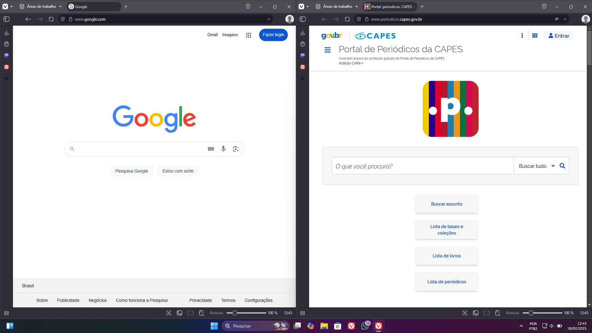

REA (Recurso Educacional Aberto) construído na disciplina CSH42 - Acessibilidade e Inclusão Digital, da
UTFPR, com
o tema Letramento Digital.
Com a crescente digitalização de processos, torna-se necessário, nos dias de hoje, um nível considerável de
domínio das tecnologias digitais. Esse domínio das tecnologias digitais, aliado a compreensão das
implicações sociais e éticas do uso das tecnologias, denomina-se Letramento Digital.
Ele é de suma importância, pois é necessário que as pessoas, além de saberem operar as tecnologias, também
conheçam suas nuances de uso, de forma que compreendam processos sociais que ocorrem no mundo digital, novas
modalidades de golpes, novas formas de interação entre pessoas, dentre outros aspectos. Portanto, é
importante que as pessoas saibam operar as tecnologias digitais, mas também tenham uma visão crítica dela,
para que possam aproveitar seus pontos positivos e mitigar seus pontos negativos.
Nesta REA, estarão conteúdos referentes aos aspectos básicos e intermediários de operação de computadores,
editores de texto, dentre outros.
Este material é construído com base nas necessidades de seu público alvo, tratado com suas especificidades
na disciplina CSH42. Neste arquivo, estarão presentes os conteúdos tratados com o público alvo, além de
materiais extras.
Para organizar uma oficina de letramento digital, é necessário conhecer seu público alvo e suas
necessidades. Portanto, um dos primeiros passos é a realização de uma reunião de alinhamento,
considerando
as expectativas e objetivos do público alvo.
A partir da primeira reunião, é possível definir os conteúdos a serem abordados nas oficinas. É
importante que metas realistas sejam estabelecidas, considerando as dificuldades anteriores do público
alvo e o tempo disponível.
Execução das oficinas
Para a execução das oficinas, é importante estabelecer metas de conteúdos a serem tratados em cada dia
de oficina, contudo, é importante considerar o tempo disponível de oficina e deixar uma sobra de tempo.
Essa sobra de tempo é importante pois dúvidas não relacionadas ao conteúdo da oficina podem surgir, e é
importante sanar essas dúvidas, pois elas também fazem parte do processo de letramento digital.
Entretanto, a oficina inteira não pode se tratar das dúvidas, senão, o caminho do letramento digital
torna-se muito tortuoso.
Também é importante deixar "tarefas de casa" para o público alvo e incentivar ele a trazer dúvidas nas
próximas oficinas, pois desta forma garante-se que o conteúdo está sendo fixado e que novos assuntos
serão explorados.
Noções Básicas
Padrões de Design
Os aplicativos e sites costumam ter um padrão bem semelhante, com barras de tarefa localizadas
geralmente na parte superior ou lateral da tela. Localizar essa barra pode ser importante para acessar
funções importantes do site/app em que você está. Ao localizar a barra, é importante também ver os
ícones presentes para mais facilmente descobrir as diferentes funcionalidades que o site/app te
apresenta.
Aprender a navegar pelos meios digitais é essencial para o bom uso de suas ferramentas. Portanto,
entender formas padrões de layout (ou organização) acelera a compreensão do meio digital e
auxilia no
entendimento de aplicativos mais complexos no futuro.
O entendimento do uso do mouse ou touchpad (superfície do Notebook sensível a toques)
é
essencial para navegar no computador. As 4
funções principais são:
Clique com botão esquerdo, Clique com botão direito, rolagem e mexer o cursor na tela.
O clique com o botão esquerdo é considerado o clique principal e é usado para selecionar conteúdo ou
arrastar arquivos/imagens. O clique com o botão direito ou clique secundário é usado para funções extras
como copiar, colar e outras funções de atalho. A rolagem é utilizada para navegar de forma vertical na
tela podendo ser a rolagem na mesma direção do conteúdo ou na direção oposta. O movimento do cursor do
mouse na tela pode ser pouco intuitivo com o mouse sendo levado para "cima" na verdade sendo o mouse
indo para mais longe em uma direção perpendicular. O movimento da esquerda para a direita e vice-versa é
mais natural pois o movimento da mão é facilmente associado ao movimento do cursor.
Curso de Digitação
Uma habilidade valiosa para uma pessoa presente no meio acadêmico é a digitação numa velocidade razoável.
Essa habilidade é construída com algumas técnicas e, principalmente, prática. Para tal, um curso de
digitação pode ser um meio para promover o aumento da velocidade de digitação.
Um curso de digitação gratuito presente na Internet é o Agile
Fingers. Nele, é possível além de treinar a digitação, verificar a posição correta dos dedos no
teclado, entre outros artifícios.
A primeira oficina de digitação foi realizada em duas etapas, a primeira parte foi demonstrar o
posicionamento ideal das mãos sobre o teclado e exemplos de como chegar às diversas teclas com de forma
eficiente. A mão esquerda é posicionada com o dedo indicador em cima da tecla “F”, dedo do meio na tecla
“D”, dedo anelar na tecla “S” e dedo mínimo em cima da tecla “A”, o mesmo processo foi feito com a mão
direita, com o dedo indicador em cima da tecla “H”, dedo do meio na tecla “J”, dedo anelar na tecla “K” e
dedo mínimo em cima da tecla “L”.
A partir desse posicionamento, pode-se alcançar com facilidade as teclas principais do teclado, por exemplo,
retira-se o dedo indicador da mão esquerda da tecla “F” e pode-se alcançar as teclas “G”, “R”, “V” e “B”, as
teclas mais próximas a posição inicial do dedo. A mesma ideia pode ser aplicada para todos os dedos e todas
as teclas principais do teclado terão fácil acesso.
Operação no Sistema Operacional
A operação de um Sistema Operacional, que permite a Interação Humano-Computador, é de suma importância.
Alternar Janelas
Fig. 6 - Barra de tarefas do Windows, uma das principais formas de alternar entre tarefas.
Fonte: Captura própria do Windows 11.
Nesse sentido, uma função útil do sistema operacional Windows é a possibilidade de alternar entre janelas
da
mesma aplicação ou de aplicações diferentes.
No Filememo,
há
a descrição de como alternar janelas no Windows de diversas formas.
Dividir a tela

Fig. 7 - Exemplo de tela dividida no windows. Fonte:
Captura própria do Windows 11.
Outra função importante de um sistema operacional é de dividir a tela entre várias janelas. Isso é
particularmente útil quando, por exemplo, se está fazendo anotações em uma parte da tela, e está se
lendo um texto em outra parte tela.
Este tutorial do TechTudo
explana várias formas de dividir a tela no Windows.
Atalhos do teclado
O conhecimento de atalhos do teclado pode aumentar a produtividade de uma pessoa na operação do
computador.
O tecnoblog
listou 70 atalhos do teclado, sendo particularmente úteis os:
Ctrl + C: Para copiar um texto
Ctrl + V: Para colar um texto copiado
Ctrl + Z: Para desfazer uma alteração num texto
Ctrl + Y: Para refazer uma alteração desfeita
Delete: Para deletar um item
Alt + Tab: Para alternar entre janelas
Desativar o touchpad
Quando um mouse está conectado no computador, o touchpad se torna desnecessário. Além disso, em
momentos
de digitação, o touchpad pode ser tocado sem querer, e isso pode gerar efeitos indesejáveis.
Nesse sentido, o touchpad pode ser desativado.
Neste tutorial do Canaltech,
é explicado como se desativar o touchpad.
No notebook em específico do público alvo, a tecla para essa desativação é o F6.
O Google Docs é um dos
editores de texto mais populares
nos dias de hoje. Ele é gratuito, possui opções básicas e intermediárias de formatação, permite a
colaboração simultânea entre pessoas num mesmo documento, e armazena os documentos em nuvem.
Ele pode ser utilizado para textos acadêmicos, anotações, dentre outros.
Criar um documento
A Google, criadora do Google Docs, listou várias formas de criar um
documento.
Compartilhar um documento
O compartilhamento de documentos é uma forma de, além de mostrar o que já foi escrito, permitir a
colaboração de outras pessoas.
O tecnobits explana
de forma detalhada as formas de se compartilhar um documento, e suas nuances, como permissões de acesso.
Formatação Básica
Uma das principais funções de um editor de texto é permitir a formatação um texto. Este tutorial
ensina a como formatar um documento nas normas da ABNT (Associação Brasileira de Normas Técnicas).
Contudo, os passos para se colocar um documento
nas normas da ABNT são úteis para diversas formatações mais simples.
Materiais complementares
Existem diversos cursos online que tratam do tema de letramento digital. Dois que se sobressaem são:
Este trabalho foi criado como material de apoio para Oficinas de Letramento Digital, realizadas para a
disciplina CSH42 - Acessibilidade e Inclusão Digital, da UTFPR - Câmpus Curitiba, no segundo semestre do ano
de 2024.
Coordenador: Leonelo Dell Anhol Almeida
Equipe executora: André Heiden Gugelmin, Doglas Franco Maurer da Rocha, Nicole da Gama dos Santos, Priscila
Lopes Mendes, Régulo Ludwig Bonfiglio